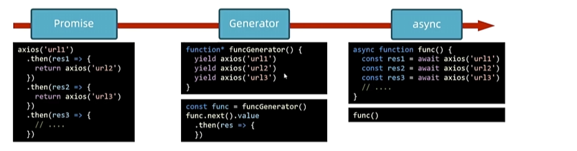

js面经
面试经验
自我介绍
HTML
CSS
样式优先级
js
this
在绝大多数情况下，函数的调用方式决定了this的值(运行时绑定).this不能在执行期间被赋值 , 并且在每次函数被调用时this的值也可能会有不同。
如何确认this的值
在非严格模式下，总是指向一个对象，在严格模式下可以是任意值。
1 | // 为整个脚本开启严格模式 |
- 全局执行环境中,指向全局对象(非严格模式,严格模式)
- 函数内部,取决于函数被调用 的方式
- 直接调用的this的值:
- 非严格模式: 全局对象
- 严格模式: undefined
- 对象方法调用的this值
- 调用者
- 直接调用的this的值:
如何指定this的值
-
调用时制定
- call方法
- apply方法
1
2func.call(thisArg,参数1,参数2...)
func.apply(thisArg,[参数1,参数2...]) -
创建时指定
- bind方法
- 箭头函数没有this,只能用上级作用域的this
1
2
3
4
5
6
7const bindFunc = func.bind(thisArg,绑定参数1, 绑定参数2...)
const itheima = {
name: '波仔',
eat() {
setTimeout(()=>console.log(this));
}
}
手写call,apply,bind
- 手写call
1 | // 需求: 定义myCall方法，效果等同call方法 |
- 手写apply
1 | // 需求：定义myApply方法，效果通apply |
- 手写bind
1 | // 需求：定义myBind方法，效果同bind |
继承
-
ES6: 基于Class实现继承
-
class核心语法
1
2
3
4
5
6
7
8
9
10
11
12
13
14class Person {
name;
age;
constructor(name, age) {
this.name = name;
this.age = age;
}
say() {
console.log(`${this.name} ${this.age}`);
}
}
const zhansan = new Person("张三", 18);
zhansan.say(); -
class实现继承
extends:创建一个类,该类是另一个类的子类super:访问对象字面量或类的原型[[Prototype]]上的属性,或调用父类的构造函数
1
2
3
4
5
6
7
8
9
10
11
12
13
14
15
16
17
18
19
20
21
22
23
24
25
26
27
28
29
30
31class Person {
name;
constructor(name) {
this.name = name;
}
sayHi() {
console.log("父类de");
}
}
class Student extends Person {
age;
constructor(name, age) {
// 注意字类如果有自己的构造函数
// 在访问this之前必须先调用super()
// 哪怕父类没有构造函数也需要先调用super()
// 目的是先初始化父类对象
super(name);
this.age = age;
}
sayHi() {
console.log("子类de");
}
}
let stu=new Student("小明",18);
console.log(stu.name);
console.log(stu.age);
stu.sayHi();
let per=new Person("小明");
per.sayHi();
console.log(per instanceof Person); -
静态属性和私有属性
1
2
3
4
5
6
7
8
9
10
11
12
13
14
15
16
17
18
19
20class Person {
// 静态属性和方法
static stInfo = "我是静态属性";
static stMethod() {
console.log(this.stInfo);
}
// 私有属性和方法
#prInfo = '私有属性';
#prMethod() {
console.log('我是私有方法');
}
testPr() {
console.log(this.#prInfo);
this.#prMethod();
}
}
Person.stMethod();
const zhangsan = new Person();
zhangsan.testPr();
-
-
ES5：基于原型和构造函数实现继承
-
原型链继承
-
借用构造函数继承
-
组合继承
-
原型式继承
-
寄生式继承
-
寄生组合式继承
- 借用构造函数来继承属性,通过原型链来继承方法
1
2
3
4
5
6
7
8
9
10
11
12
13
14
15
16
17
18
19
20
21
22
23
24
25// 父类构造函数
function Person(name) {
this.name = name;
}
// 父类原型
Person.prototype.sayHi = function () {
console.log(`你好,我叫${this.name}`);
};
// 子类构造函数
function Student(name) {
Person.call(this, name);
}
// 基于父类的原型创建一个新的原型对象
const prototype = Object.create(Person.prototype, {
constructor: {
value: Student
}
});
Student.prototype = prototype;
console.log(Student.prototype.__proto__ === Person.prototype);
-
Fetch
fetch是浏览器内置的api,用于发送网络请求
- Ajax: 基于XMLHttpRequest收发请求,使用较为繁琐
- axios: 基于Promise的请求客户端,在浏览器和node中均可使用,使用简单,功能强大
- fetch: 内置api,基于Promise,用法和axios类似,功能更为简单
核心语法
- 如何发请求
- 如何处理响应(JSON)
- 如何处理异常
1 | async function func(){ |
提交FormData
- 如何设置请求方法
- 如何提交数据
1 | async function func(){ |
提交JSON
- 如何设置请求头
1 | async function func() { |
兼容ie10+
- promise-polyfill
- whatwg-fetch
Generator
Generator 是ES6提供的一种异步编程的解决方案

Generator对象由生成器函数 返回并且它符合可迭代协议 和迭代器协议
生成器函数在执行时能够暂停 ,后面又能从暂停处继续执行.
1 | function* func() { |
1 | function* Generator() { |
手写Promise
函数柯里化
在计算机科学中,柯里化(Currying),又译为卡瑞化或加里化,是把接收多个参数的函数变换成接收一个单一参数(最初函数的第一个参数) ,并且返回接收余下参数而且返回结果的新函数
1 | function sum(a,b) { |
1 | // 改写结果 |
面试题
改写函数，实现如下效果
1 | function sum(a,b,c,d,e){ |
算法
网络
操作系统
本博客所有文章除特别声明外，均采用 CC BY-NC-SA 4.0 许可协议。转载请注明来自 马嘉路！
 wechat
wechat alipay
alipay